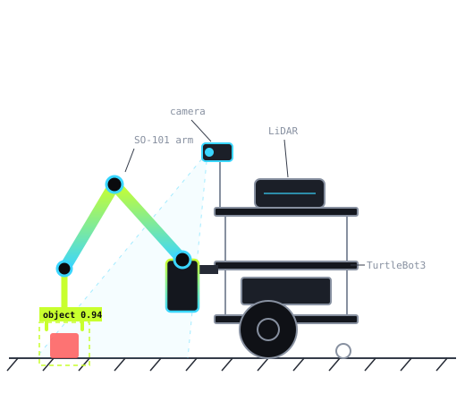

See it.
Grab it.
Bring it back.
A TurtleBot3 with a LeRobot SO-101 arm that spots an object on the floor, drives over, picks it up and hands it back to you. No human in the loop.

One button. Five stages.
Each stage is its own ROS 2 component. A central mission node sequences them and recovers when one fails.
Search
Scan the room with the onboard camera.
Detect
Find the target and project it onto the floor map.
Navigate
Nav2 plans a collision-free path to a grasp pose.
Grasp
MoveIt solves IK and the SO-101 picks the object up.
Deliver
Drive to the person and place the object down.
Watch a full run
Results at a glance SAMPLE DATA
Computed live from our trial log (assets/js/trials.js). See Results for every run.
Mobile manipulation on a student budget
This project develops an autonomous mobile manipulation system by integrating a LeRobot SO-101 robotic arm with a TurtleBot3. Using an onboard camera and computer vision, the robot detects a target object on the floor and estimates its location. The TurtleBot then autonomously navigates to a suitable grasping position, uses the arm to retrieve the object, and transports it to a designated delivery location.
The system combines object detection, localization, motion planning and robotic manipulation using ROS 2. We evaluate its performance across different starting positions and object placements, initially focusing on lightweight, visually distinctive objects.
Reach goals: autonomous object search and a wider variety of everyday objects.
The full robotics loop
Sensing
The camera detects and locates objects. LiDAR and wheel odometry localize the robot on a map.
Planning
The robot picks an approach pose, plans a collision-free route with Nav2, and computes arm motions with MoveIt.
Actuation
The TurtleBot drives to the target while the SO-101 arm and gripper do the pick and the place.